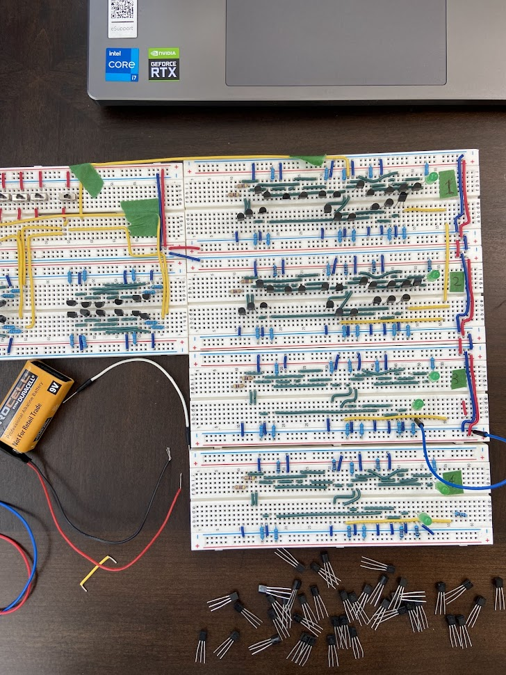
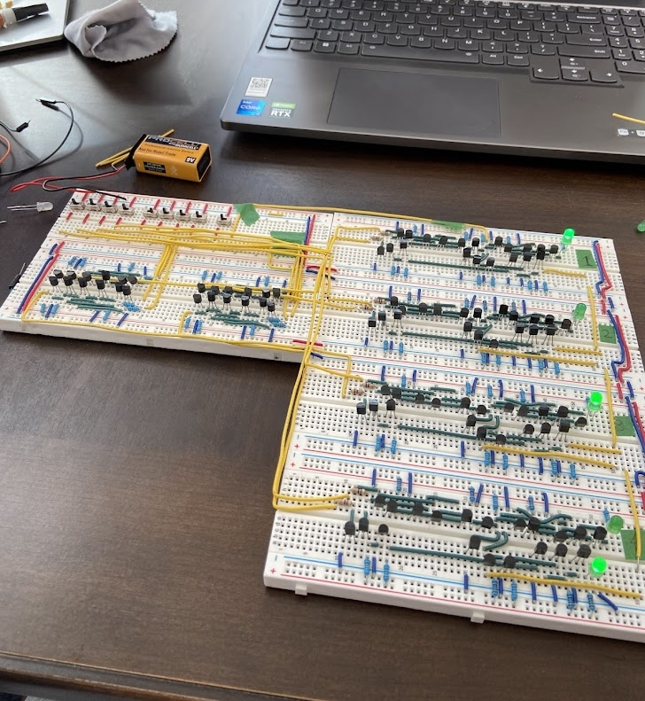

High school capstone / Logisim, Tinkercad, Fritzing, NPN transistors
4-Bit Binary Adder/Subtractor
A hardware-focused capstone with Andrew Yong: a 4-bit arithmetic unit built from discrete NPN transistors and passive components.
Project Overview
The goal was to build a functional arithmetic unit capable of handling 4-bit inputs and producing a 5-bit output, demonstrating digital logic at the transistor level without using arithmetic ICs or a microcontroller.
Design Process
- Designed and tested the full-adder logic in Logisim-Evolution using XOR, AND, and OR gates.
- Cascaded four full adders and added mode-select logic for two's-complement subtraction.
- Translated gate-level logic into transistor-level circuits using NPN transistors as switching elements.
- Used Tinkercad for detailed simulation and Fritzing for faster breadboard layout planning.
Physical Build
The final build used 104 NPN transistors, many resistors, 9 input switches, 5 output LEDs, and more than 200 jumper wires across 6 breadboards. The simulation worked cleanly, but the physical build exposed how fragile large breadboard circuits can be.
Selected Visuals


Debugging and Takeaways
The most satisfying debugging moment was finding a single wire that was one breadboard hole off after a day of rechecking connections against the simulated design.
- Deepened my understanding of arithmetic at the gate and transistor level.
- Practiced translating a logical schematic into a physical circuit.
- Learned the practical limits and failure modes of complex breadboard wiring.
- Built intuition for how identical static logic blocks combine into calculation.